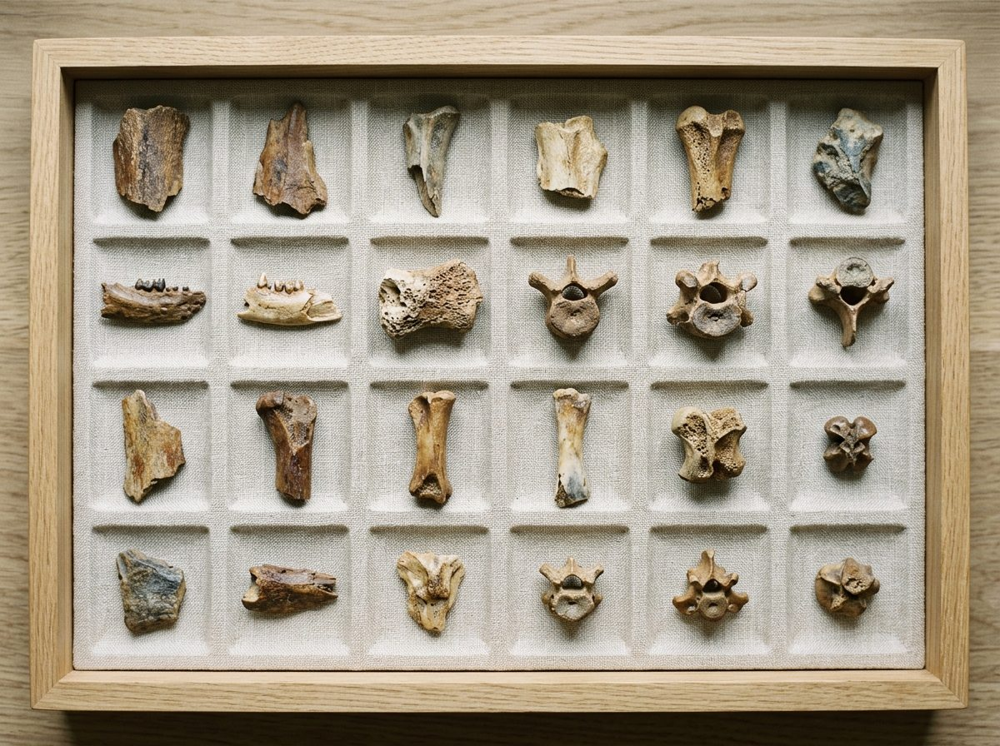

EXH. 01 · PALAEONTOLOGYThe Fossil Hunters
Foreign palaeontologists excavating in rural China wanted local diggers to search hillsides quickly and thoroughly. To reward diligence, they announced a crisp piece-rate bounty: cash paid for every individual prehistoric bone fragment brought to camp.
Pause & Predict: How did enterprising diggers maximise their daily pay?
Open Archive Outcome
Diggers quickly spotted the maths: one rare, intact skeleton earned a single modest fee, whereas taking a hammer to it turned one skeleton into thirty lucrative fragments. Priceless specimens arrived in buckets of rubble.
Where do you still see “paying per fragment” in modern technical or academic life?